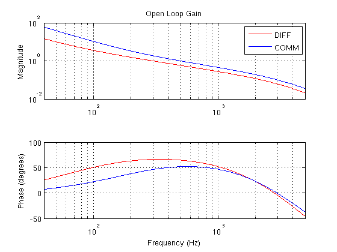
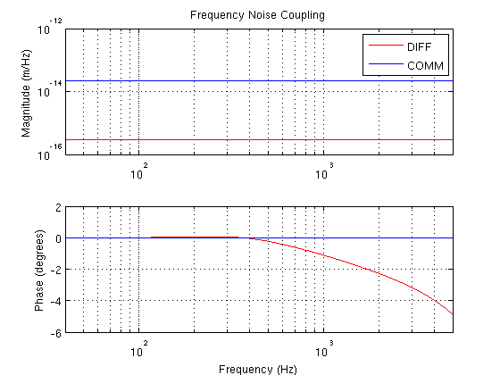

Power Recycled Michelson Lentickle Example
script to calculate loop gains and noise transfer functions for the MICH example.
Contents
Set up paths
run ../setupLentickle;
Interferometer Model
first we will set up our interferometer model, including the optickle plant (handled by Optickle) and the rest of the control system (handled by lentickle). The control system model is stored in the cucumber, click here to see a demo of how to create a cucumber.
opt = exampleMICHopt(); % create the opt object cucumber = exampleMICHcucumber(opt); % create the cucumber structure % look at exampleMICHcucumber.m for % more info about the cucumber. fHigh = 5000; fLow = 40; f = logspace(log10(fLow),log10(fHigh),500).'; % choose the frequency array we will use
Closed loop results
We will now call the lentickleEngine function to calculate the closed loop transfer functions of the control system. As arguments, it takes the cucumber, a 'pos' array which has offsets of all the Optickle drives (note: these are 'drives' not 'mirrors'), and the frequency array.
results = lentickleEngine(cucumber,[],f); % calculate all results
Transfer functions
All the transfer functions (which include closed loops and all cross coupling effects) can be extracted from the results structure, and the pickleTF function makes that easy.
Open Loop Gains
We will calculate the open loop gains of our two degrees of freedom, the differential and common modes of the arms, 'DIFF' and 'COMM'. pickleTF will easily give us the closed loop gain, and calulating the open loop gain from that is fairly easy. (OLG = 1 - 1./CLG)
DIFFOLG = 1 - 1./pickleTF(results,'DIFF','DIFF'); COMMOLG = 1 - 1./pickleTF(results,'COMM','COMM'); % make a plot of them figure(1) subplot(2,1,1) loglog(f,abs(DIFFOLG),'r',f,abs(COMMOLG),'b'); title('Open Loop Gain') ylabel('Magnitude') legend('DIFF','COMM') xlim([fLow fHigh]) grid on subplot(2,1,2) semilogx(f,180/pi*angle(DIFFOLG),'r',f,180/pi*angle(COMMOLG),'b'); ylabel('Phase (degrees)') xlabel('Frequency (Hz)') xlim([fLow fHigh]) grid on
Noise Transfer Functions
Here we will calculate the transfer function of laser noises to our length sensors, we will calibrate the sensor in terms of meters of the relevant degree of freedom.
% First we will calculate the calibration of AS_Q in DIFF meters, and % REFL_I in COMM meters. ASQcalmeters = pickleTF(results,'MX','AS_Q') - pickleTF(results,'MY','AS_Q'); % units of [AS_Q counts]/m REFLIcalmeters = pickleTF(results,'MX','REFL_I') + pickleTF(results,'MY','REFL_I'); % units of [REFL_I counts]/m % Now we will calculate the coulping of laser frequency noise to AS_Q and % REFL_I. The PM 'mirror' is the phase modulator actuator, we divide by % i*f to get frequency. FMtoASQ = pickleTF(results,'PM','AS_Q') ./ ( 1i * f ); % units of [AS_Q counts]/Hz FMtoREFLI = pickleTF(results,'PM','REFL_I') ./ ( 1i * f ); % units of [REFL_I counts]/Hz % Now we calibrate in terms of meters. FMtoDIFF = FMtoASQ ./ ASQcalmeters; % units of m/Hz FMtoCOMM = FMtoREFLI ./ REFLIcalmeters; % units of m/Hz %plot comparison figure(2) subplot(2,1,1) loglog(f,abs(FMtoDIFF),'r',f,abs(FMtoCOMM),'b'); title('Frequency Noise Coupling') ylabel('Magnitude (m/Hz)') legend('DIFF','COMM') xlim([fLow fHigh]) grid on subplot(2,1,2) semilogx(f,180/pi*angle(FMtoDIFF),'r',f,180/pi*angle(FMtoCOMM),'b'); ylabel('Phase (degrees)') xlabel('Frequency (Hz)') xlim([fLow fHigh]) grid on
In this plot we can see common mode regection of laser frequency noise!